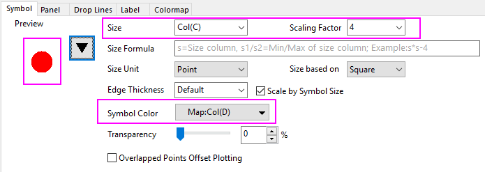

Was wird mit einer Diagrammvorlage gespeichert?
Graph-Template-Elements
Diagrammfenster werden aus Diagrammvorlagendateien erstellt. Origin-Diagrammvorlagen haben die Erweiterung OTP. Origin verfügt über eine große Anzahl standardmäßiger Diagrammvorlagen (Systemvorlagen). Diese Vorlagen werden verwendet, um alle über 100 Diagrammtypen von Origin zu zeichnen. Sie können angepasst und gespeichert werden, um Ihre benutzerdefinierten Einstellungen zu bewahren.
Die Datei einer Diagrammvorlage unterscheidet sich von der Datei eines Diagrammfensters (.OGG) darin, dass Vorlagen keine Daten speichern. Diagrammvorlagen speichern wichtige Eigenschaften von Seite und Layer (Seitengröße, Anzahl der Layer, Skalierung von Text- und Zeichenobjekten usw.) sowie Informationen über den Diagrammstil (Diagrammtyp, Zeichnungsfarbe, Datenbeschriftungen usw.). Weitere Informationen finden Sie unten unter "Mit einer Diagrammvorlage abgespeicherte Attribute".
Speichern von Diagrammanpassungen in eine Vorlagendatei
Um das aktive Diagrammfenster als Vorlage (OTP) zu speichern:
- Aktivieren Sie das Diagrammfenster und wählen Sie Datei: Template speichern unter....
oder
- Klicken Sie mit der rechten Maustaste auf die Titelzeile des Fensters und wählen Sie im Kontextmenü Template speichern unter...
Beide Menübefehle öffnen den Dialog template_saveas. Informationen zu den Dialogelementen finden Sie unter Ein benutzerdefiniertes Fenster als eine Vorlage speichern.
Mit einer Diagrammvorlage abgespeicherte Attribute
Die Diagrammseite, jeder Diagrammlayer der Seite, die Achsen, die Hilfsstrichsbeschriftungen, Text- oder Objektanmerkungen sowie die Datenzeichnungen selbst besitzen alle jeweils Eigenschaften, die sich mit der Diagrammvorlage speichern lassen.
Attribute, die mit dem Dialog Details Zeichnung festgelegt werden, werden mit einer Diagrammvorlage gespeichert:
- Die Registerkarte Seite des Dialogs Details Zeichnung
- Die Registerkarte Layer des Dialogs Details Zeichnung
- Die Registerkarte Diagramm des Dialogs Details Zeichnung
- Die Registerkarten Funktion, Datenpunkt, Fehler und Beschriftung des Dialogs Details Zeichnung
Die Attribute, die in diesen Dialogen festgelegt werden, werden zusätzlich auch in der Diagrammvorlage gespeichert:
- Der Dialog Achsen
- Die Dialoge, auf denen Diagrammanmerkungen (Text- und Zeichenobjekte) festgelegt werden
Zusätzlich werden die folgenden Diagrammfenstereigenschaften in der Vorlage gespeichert:
- Diagrammlangname Sie können den Langnamen für das Diagramm, das auf Grundlage dieser Vorlage erstellt wird, vordefinieren.
- Diagrammkurzname Sie können den Kurznamen für das Diagramm, das auf Grundlage dieser Vorlage erstellt wird, vordefinieren.
Hinweise: Auf die Methode des vordefinierten Lang-/Kurznamens von Diagrammen haben Sie über das Design Zugriff. Suchen Sie im Dialog Format als Design speichern den Zweig
- page.Misc.PagePresetLongName.strVal zum Vordefinieren des Diagrammlangnamens
- page.Misc.PagePresetShortName.strVal zum Vordefinieren des Diagrammkurznamens
|
Am Ende...
- Wenn Sie die Diagrammvorlage beim Speichern als eine "klonbare Vorlage" gekennzeichnet haben, dann werden die Informationen über das der Diagrammfenster und die Struktur der Quelldaten mit der Diagrammvorlage gespeichert. Mehr dazu können Sie unter Klonbare Vorlagen lesen.
- Ein Vorschaubild des Diagramms zum Zeitpunkt des Speicherns der Vorlage wird mit der Diagrammvorlage gespeichert. Diese Vorschau wird verwendet, um Ihre Vorlage im Menü Zeichnen und in der Vorlagenbibliothek darzustellen.
Ein Hinweis zu den Platzhaltern des Diagrammstils
Die Einzelheiten (oder Diagrammstile) einer jeden Datenzeichnung in Ihrem Diagrammfenster werden als Diagrammstil-Platzhalter gespeichert. Platzhalter für den Diagrammstil enthalten Informationen über den Diagrammtyp (z.B. Punkt, Linien oder Säulen) und die Einstellungen für das Diagramm (z.B. die Einstellungen auf der Registerkarte Symbol des Dialogs Details Zeichnung). Wenn Sie ein Diagrammfenster als Vorlage speichern, hat jedes Diagramm in jedem Layer des Diagrammfensters einen zugehörigen Platzhalter für den Diagrammstil.
Wenn Sie also ein Diagramm auf der Basis dieser benutzerdefinierten Vorlage erzeugen, wird für jeden Layer Ihrer Grafik, das erste Diagramm im Layer nach den im ersten Diagrammstil-Platzhalter für diesen Layer gespeicherten Informationen gezeichnet. Das zweite Diagramm dieses Layers wird nach den im zweiten Diagrammstil-Platzhalter für diesen Layer gespeicherten Informationen gezeichnet usw. Sobald Sie dem Layer Diagramme hinzufügen, sucht Origin nach einem Platzhalter für das Diagrammstil, der zurzeit nicht im Einsatz ist (z.B. wenn ein Diagramm aus dem Layerinhalt entfernt wurde) und zeigt das Diagramm mit dem ersten auffindbaren Diagrammstil-Platzhalter an. Fügen Sie in den Layer mehr Diagramme ein als Platzhalter für den Stil vorhanden sind, zeigt Origin das Diagramm mit den Informationen des letzten Diagrammstil-Platzhalters an.
Zusätzliche Skripte, die mit Vorlage gespeichert wurden
Sie dürfen spezielle Befehle verwenden, um einige LabTalk-Skripte mit Diagrammvorlage zu speichern. Hier haben wir zwei Befehle, die seit Origin 2021b unterstützt werden:
- können Sie den Befehl page.info.system.plotting.LT$= verwenden.
 |
- Öffnen Sie ein neues Projekt und importieren Sie <Programmordner>\Samples\Graphing\Group.DAT in eine neue Arbeitsmappe.
- Markieren Sie die ersten Spalten und wählen Sie Zeichnen: Einfache 2D: Punktdiagramm, um ein Diagramm zu erstellen.
- Klicken Sie doppelt auf die Zeichnung, um den Dialog Details Zeichnung zu öffnen. Wählen Sie den gefüllten Kreis als Symbolform und col(C) für die Größe und setzen Sie den Skalierungsfaktor auf 4. Weisen Sie col(D) zur Abbildung der Symbolfarbe zu.

- Um das Speichern dieser Vorlage mit der Abbildung von Symbolgröße und Symbolfarbe vorzubereiten, müssen Sie zuerst das untenstehende Skript ausführen:
page.info.system.plotting.LT$="worksheet -p 248 __TEMPLATE;"
Hier ist worksheet -p 248 __TEMPLATE; der LabTalk-Befehl, den Sie mit der Vorlage speichern, um die Abbildungsinfos der Spalte zu behalten. __TEMPLATE ist ein Schlüssel, um das aktuelle Fenster, das Sie speichern möchten, zu notieren (da Sie ihm keinen Namen gegeben haben).
- Klicken Sie mit der rechten Maustaste auf den Fenstertitel, wählen Sie Template speichern unter, um den Dialog zu öffnen, vergeben Sie einen Namen wie myBnC und klicken Sie auf OK.
- Aktivieren Sie die Quellarbeitsmappe und wählen Sie Zeichnen: Meine Vorlagen: myBnC. Sie können ein identisches Diagramm erstellen.
|
- können Sie den Befehl page.info.system.plotting.LTAfter$ verwenden.
Wenn Sie zum Beispiel "Seite an Layer anpassen" mit Rahmenbreite = 8 nach dem Zeichnen wählen, können Sie Folgendes ausführen:
page.info.system.plotting.LTAfter$="pfit2l borderwid:=8;"